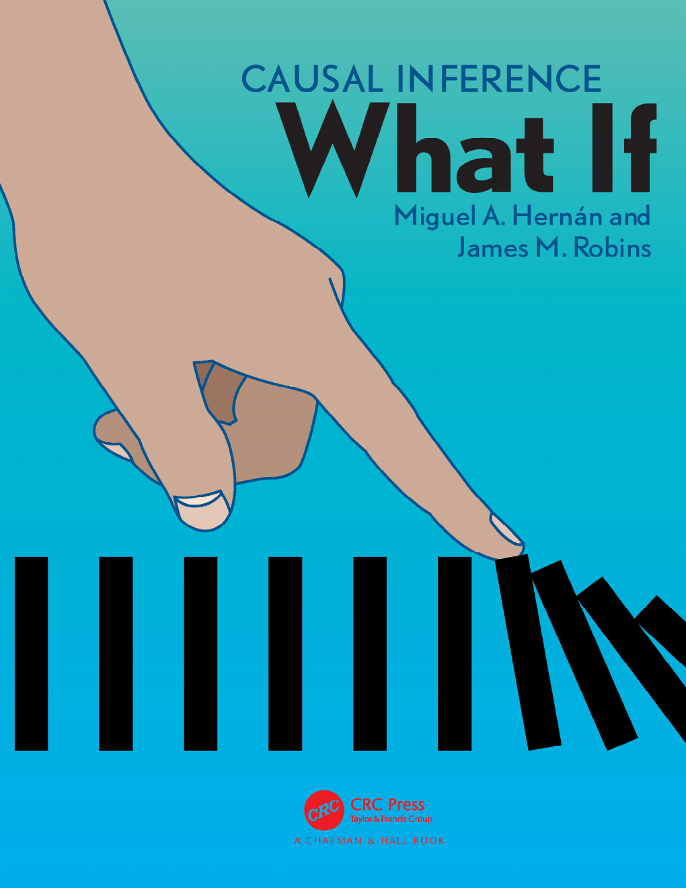

因果推断：What If 中文版
Miguel A. Hernán & James M. Robins 著，Chapman & Hall/CRC 出版（2020，2024 年 1 月 2 日电子版）。这是目前因果推断领域引用最广的教科书之一：从反事实框架讲到 DAG、混杂、选择偏倚，再到逆概率加权、g 算法、工具变量、目标试验模拟——全书围绕一个问题：如何用数据回答"如果当初……会怎样"。
本站为全书中文翻译，23 章 + 导言全文收录，原书全部图表按原样保留，另加译者注补充背景。全书分为三部分：
- 第一部分 · 无模型的因果推断（第 1–10 章）：反事实、随机化、可交换性、DAG 与三大偏倚，不用任何统计模型就能把因果问题想清楚。
- 第二部分 · 基于模型的因果推断（第 11–18 章）：逆概率加权、标准化与 g 算法、g 估计、倾向性评分、工具变量、生存分析。
- 第三部分 · 时变处理的因果推断（第 19–23 章）：时变处理与 g 方法、处理-混杂反馈、目标试验模拟、因果中介。
可用右上角搜索框（或按 /）做全文检索。
导言
第一部分 · 无模型的因果推断（Part I — Causal inference without models）
- 第 1 章 · 因果效应的定义A definition of causal effect
- 第 2 章 · 随机化试验Randomized experiments
- 第 3 章 · 观察性研究Observational studies
- 第 4 章 · 效应修饰Effect modification
- 第 5 章 · 交互作用Interaction
- 第 6 章 · 因果效应的图形表示Graphical representation of causal effects
- 第 7 章 · 混杂Confounding
- 第 8 章 · 选择偏倚Selection bias
- 第 9 章 · 测量偏倚与“非因果”图Measurement bias and “noncausal” diagrams
- 第 10 章 · 随机变异Random variability
第二部分 · 基于模型的因果推断（Part II — Causal inference with models）
- 第 11 章 · 为什么需要模型Why model?
- 第 12 章 · 逆概率加权与边际结构模型IP weighting and marginal structural models
- 第 13 章 · 标准化与参数化 g 算法Standardization and the parametric g-formula
- 第 14 章 · 结构嵌套模型的 g 估计G-estimation of structural nested models
- 第 15 章 · 结局回归与倾向性评分Outcome regression and propensity scores
- 第 16 章 · 工具变量估计Instrumental variable estimation
- 第 17 章 · 因果生存分析Causal survival analysis
- 第 18 章 · 变量选择与高维数据Variable selection and high-dimensional data
第三部分 · 时变处理的因果推断（Part III — Causal inference for time-varying treatments）
本站为个人学习目的的中文翻译（译注为译者补充），原书版权归 Miguel A. Hernán 与 James M. Robins 所有（Chapman & Hall/CRC）。原书电子版可在作者网站免费获取：hsph.harvard.edu/miguel-hernan/causal-inference-book。如版权方认为本翻译不合适，请联系删除。翻译仅供学习交流，引用请以英文原版为准。